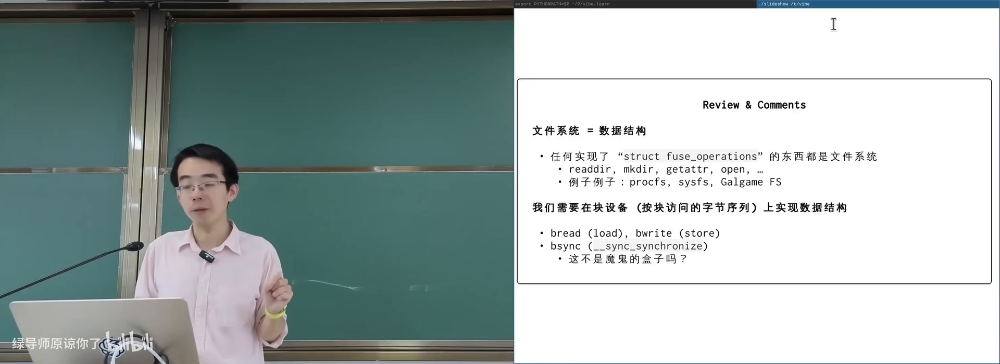
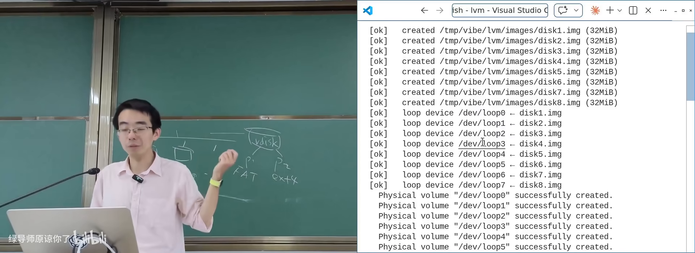
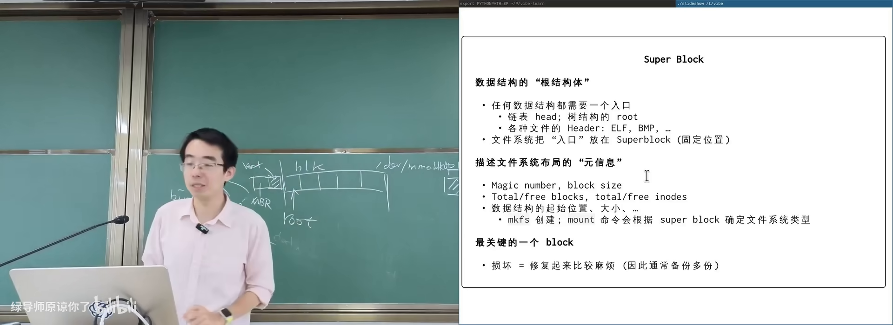
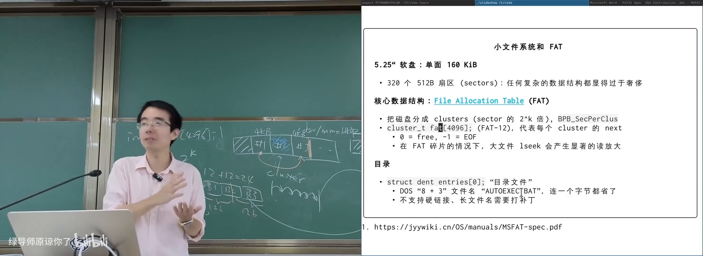
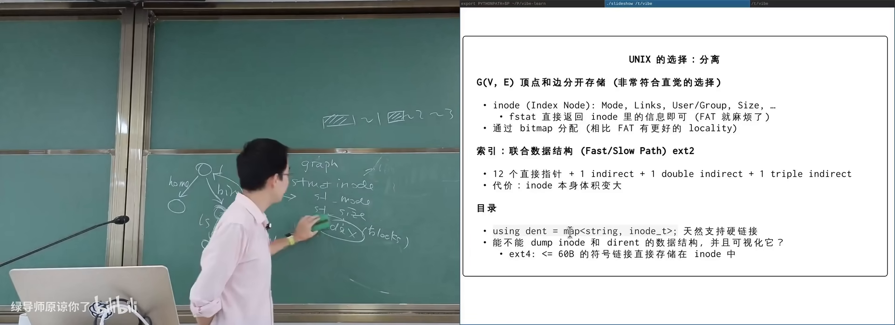
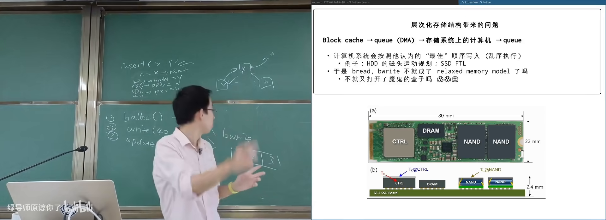

原视频：Bilibili · BV12EV66bErd（时长约 87 分钟） 课程：南京大学《操作系统原理》（2026）第 26 讲 · 文件系统实现和崩溃一致性 整理说明：本书由视频语音转录后经 AI 重构而成，口语已转写为书面语；关键思路标注 (参考时间)，
SCREENSHOT:占位对应演示时刻。
1. 在块设备上实现「目录树」
(参考时间: 00:00)
上一讲已说明：只要实现目录遍历、创建/删除目录、属性查询与 open/read/write 等基本操作，一个东西就可以是文件系统——包括 /proc 这类虚拟文件系统，甚至课上演示过的 galgame fs。
本讲问题更具体：如何在块设备上实现一个能持久化（persistence，断电后数据仍在）的目录树数据结构。
块设备的简化模型
把块设备想成三件事（与并发编程里的共享内存类比）：
| 块设备操作 | 类比 |
|---|---|
| 读一块 | load |
| 写一块 | store |
| 等待写入落盘（block sync / flush） | 内存屏障 / 等待所有写完成 |

块设备：块数组上的 read / write / sync在 B 站打开 (00:02:00)
现实设备更复杂：分区表、逻辑卷可以层层虚拟。课上演示了 GPT（GUID Partition Table，UEFI 规范的一部分，描述磁盘上分区布局的数据结构）与 LVM（Logical Volume Manager，把多个物理卷拼成卷组再切逻辑卷）：用 loop 设备（把普通文件伪装成块设备）叠出多层虚拟磁盘，再格式化成 FAT 与 ext4 分区，写入的 hello/world 最终落在底层镜像文件里。

LVM 演示：loop 设备 → 卷组 → 分区 → 两种文件系统在 B 站打开 (00:08:00)
对 LVM 相关命令做 strace 会发现：底层大量是 ioctl（设备驱动的扩展控制接口）——loop 创建、device mapper、分区映射皆然。这也说明「实现一个兼容 Linux 的系统」远不止 read/write。
读放大与写放大
文件系统作为数据结构，难在高效：
- 你只想要文件大小或 mtime，却要读进一整块元数据（读放大）；
- 你只改一个字节，却要更新数据块、inode/元数据、分配位图，甚至触发 SSD 内部 FTL（闪存转换层，逻辑块到物理页的映射表）的 copy-on-write（写放大）。
因此必须在内存里做块缓存（Linux 称 buffer cache）：bread/bwrite 类接口类似 load/store，miss 时再下到设备。设计时要利用 locality（局部性，一起访问的数据放同一块）。
2. 设计问题与工作负载
(参考时间: 00:17:10)
实现目录树至少要回答：
- 元数据存在哪？直接塞在数据里，还是单独区域？
- 数据块怎么组织？一个大文件可能几十 GB，offset → 块号如何映射？
- 目录怎么表示？名字到文件对象的映射。
高效设计需要先做工作负载研究（workload study）。课上引用的经典统计大致是：
- 个人/源码场景：大量小文件；
- 少数大文件（电影、数据库）占绝大部分空间；
- 单个目录 entry 通常不多；
- 目录往往被填得较满。
这些 finding 直接指导：小文件要省元数据、头部访问要快、目录项要紧凑。
所有数据结构都要有 root
磁盘上的数据结构必须有入口：链表有 head，树有 root，ELF 有 magic number 与 header，GPT 在磁盘头（兼容 MBR）与盘尾各存一份。文件系统的入口叫 super block（超级块，描述块大小、inode/数据区位置、空闲空间等关键信息）。mount 与 mkfs 都围绕它工作。若只允许破坏一个块以造成最大麻烦，super block 是首选。

Super block 作为文件系统数据结构的 root在 B 站打开 (00:24:30)
3. FAT：极致省空间的链表
(参考时间: 00:26:30)
FAT（File Allocation Table，文件分配表）面向极小设备：5.25 英寸软盘单面约 160KB，按 512 字节一块只有约 320 块。设计哲学不是 fancy 索引，而是把空间省到极致。
核心：next 数组
磁盘被划成 cluster（簇，若干扇区绑成的逻辑分配单位）。FAT 核心是一个与 cluster 编号对应的数组，可理解为：
next[cluster] = 下一簇编号 | 0(空闲) | 特殊值(文件结束)
文件 = 从目录项记录的 first cluster 出发，沿 next 走到结束。再存一个文件 size，即可知道最后一簇有多少字节属于该文件。
FAT12/16/32 中的数字指 next 表项的位宽。FAT12 甚至把两个 12-bit 表项打包进 3 字节，按 bit 紧压。
目录也是文件
早期 FAT 文件名固定 11 字节（8.3 格式：8 字符名 + 3 字符扩展名）。目录项（directory entry）含名字、属性位（只读/隐藏/系统/目录等）、size、first cluster 高低位。目录本身也是用 next 串起来的线性表，不支持硬链接。
今天在 FAT 镜像里仍能看到 LONGNA~1 这类波浪线截断——为了在 DOS 下保持可访问。

FAT 目录项与 8.3 短文件名在 B 站打开 (00:38:00)
优缺点
- 优点：结构极简，小文件多的场景几乎全在内存里跳指针，性能可接受。
- 缺点：大文件 + 碎片（fragmentation，分配回收导致块不连续）时，next 跳来跳去，FAT 表自身也可能很大，产生严重读放大。
课上示例代码把镜像 mmap（映射到进程地址空间）后，super block 变成指针、DFS 扫目录树，直接验证连续簇与碎片簇——文件系统没有神秘，就是可解析的数据结构。
4. UNIX 文件系统：inode 与联合索引
(参考时间: 00:41:20)
UNIX 设计者考虑得更远：大文件、大文件系统、硬链接。目录树在 UNIX 里更接近图：每个目录有 .（自己）与 ..（父目录）。
节点与边分离
- 节点元数据 → inode（索引节点，保存 mode、size、时间戳、数据块索引等，不含文件名）；
- 边 → 目录文件中的映射：
文件名 → inode 编号，可顺序存放； - 数据 → 由 inode 中的索引结构指向块。
联合索引：头部要快，还要能很大
统计表明：多数文件很小，且「读文件头」远多于「读整文件」。UNIX 因此在 inode 内直接放若干直接指针（指向文件前部的数据块）；不够时用一级、二级、三级间接索引（间接块里存的是「指向数据块的指针」，可类比多级页表）。

inode：直接指针 + 多级间接索引在 B 站打开 (00:45:10)
另有一招：所有 inode 集中存放，利用目录内文件创建时间上的连续性，一次读入相关元数据；短符号链接甚至可以偷 inode 里索引区的空间，直接内联路径字符串。
Linux 提供 debugfs 等工具暴露底层：link count、block id、inline symlink 等都能看到。你不必读完全部内核源码——知道「应该有办法暴露底层信息」，再用工具/AI 构建可视化即可。
5. 崩溃一致性：又一个「魔鬼盒子」
(参考时间: 00:50:30)
数据结构课与并发课解决的是「多线程同时改」；文件系统还要面对 crash consistency（崩溃一致性）：系统随时可能掉电/崩溃，磁盘上的数据结构必须仍处于一致状态，或至少可恢复到一致。
为何多写一步就危险
以向文件 append 一个块为例，至少涉及：
- 分配位图：把某块标记为已用；
- 写入数据；
- 更新 inode/元数据。
这三次 bwrite 进入设备队列后，顺序不保证。崩溃时任意子集都可能已落盘。最危险的例子：inode 与数据都写了，位图没更新——该块在文件系统眼里仍空闲，未来会被分配给别人，文件内容某天突然被覆盖。

三种块写入与崩溃时的子集组合在 B 站打开 (00:55:00)
人类曾长期「裸奔」：先用起来，坏了再 fsck（file system check，事后扫描并修复元数据不一致）。UNIX 会把无目录指向但仍存在的 inode 丢进 lost+found。
日志：用操作记录换一致
数据结构有两种视角：
- 就地状态：直接维护树/表；
- 操作日志：记下所有修改，重放即可重建。
append-only 的日志天然是崩溃友好的——多写一条日志，崩溃后按序 redo。
Journal / write-ahead log / redo log（先写日志再改正本）：
transaction begin
→ 写入日志（元数据或完整块写）
→ flush 等待落盘
→ transaction end（再 flush）
→ checkpoint：把日志重放到正本数据结构
→ 清除日志
只要磁盘上能看到 transaction end，就说明之前的日志必然已落盘（happens-before），重启后可以安全 redo。
优化与变种：
- 合并事务（xv6）：多次系统调用共享一次 flush；
- JBD2：Linux 日志块设备守护进程，周期性 checkpoint；
- ext4 checksum 日志：用校验和代替部分 flush 同步；
- metadata journal：只日志 inode/位图等元数据，文件内容可丢一小段——保证目录树完整，提高性能。
LSM-Tree（log-structured merge tree）是同一思想在存储引擎中的体现：内存 memtable + WAL，刷盘成不可变层再合并。
6. 应用层如何安全地保存文件
(参考时间: 01:14:40)
即便文件系统有 journal，应用仍可能把事情做错。文本编辑器若 open(O_TRUNC) 后进程被杀，文件直接没了。
常见「以为安全」的序列：
write a.txt.tmp → close → unlink a.txt → rename a.txt.tmp → a.txt
问题：unlink 与「创建空 tmp」都可能进元数据日志；崩溃后 redo 可能得到「空 tmp + 旧文件已删」。
更可靠的做法：
- 在关键步骤调用 fsync 家族 确保落盘；
- 或依赖 rename 的原子性：
rename要么完成替换，要么什么都没发生（Linux 语义）。
sync 家族：
| 调用 | 作用 |
|---|---|
sync |
全局文件系统同步 |
fsync(fd) |
同步该文件数据与元数据 |
fdatasync(fd) |
同步数据；仅当元数据受影响时才同步元数据——固定大小文件/数据库 redo log 场景更高效 |
课上研究结论：大量软件（GNU make 的错误构建、in-place sort、早期 Node/Electron 生态等）都存在崩溃一致性问题；正确姿势并不在大众常识里。
AI 时代可以：把当年的 crash-consistency 论文丢给模型，让它实现简化检查器，对 sort 等工具观测系统调用并模拟崩溃现场——知识 + 模型 可以复现并扩大当年的实验，但更值得做的是没人做过的事。
附录：概念补给
块设备
- 是什么：按块读写的存储抽象，像一个大数组。
- 课上为何出现：文件系统正本实现其上的持久化数据结构。
- 和什么像：共享内存，只是多了一步「等待落盘」。
GPT
- 是什么：GUID 分区表，描述磁盘分区布局的标准（属 UEFI）。
- 课上为何出现：固件启动时就要看懂磁盘结构。
- 和什么像：房间平面图：不看图就不知道卧室在哪。
LVM
- 是什么：逻辑卷管理器，把多块盘拼成卷组再切逻辑卷。
- 课上为何出现：展示「块设备也能层层虚拟」。
- 和什么像：把几间储藏室打通再重新隔断出租。
读放大 / 写放大
- 是什么：为完成逻辑上很小的读/写，底层实际读/写了更多数据。
- 课上为何出现：文件系统性能设计的核心约束。
- 和什么像：只想改作文里一个字，却要把整页重抄一遍。
Super block
- 是什么：文件系统在磁盘上的「总说明书」数据结构。
- 课上为何出现：任何持久化数据结构都要有 root。
- 常见误解：不是「最大的块」，而是最关键的元数据块。
FAT / cluster
- 是什么：用 next 数组串起簇的文件分配表；cluster 是逻辑分配单位。
- 课上为何出现：最小可用的磁盘文件系统设计。
- 和什么像：用一串便利贴写着「下一页在第几页」。
碎片（fragmentation）
- 是什么：频繁分配回收后，文件块不再连续。
- 课上为何出现：解释 FAT 大文件性能崩坏。
- 和什么像：图书馆书架上同一套书被拆散到各层。
inode
- 是什么：UNIX 中存放文件元数据与块索引的结构，文件名在目录里。
- 课上为何出现：支撑硬链接与高效大文件索引。
- 常见误解：文件名不在 inode 里；多个名字可指向同一 inode。
间接索引
- 是什么：用额外块保存「指向数据块的指针」，扩展可寻址范围。
- 课上为何出现：兼顾「头部快」与「文件可以很大」。
- 和什么像：多级页表：目录套目录，最终才到房间。
Crash consistency
- 是什么：任意时刻崩溃后，磁盘数据结构仍一致或可恢复。
- 课上为何出现：持久化系统独有的正确性要求。
- 和什么像：并发里的「任意交错都正确」，换成「任意掉电点都正确」。
Journal / Redo log
- 是什么：先追加记录操作意图，崩溃后按日志重做。
- 课上为何出现：实现崩溃一致性的主流工程手段。
- 和什么像：先在草稿纸记账，再誊进账本；丢了账本就按草稿重抄。
fsck
- 是什么：事后扫描文件系统元数据并修复/找回孤儿文件。
- 课上为何出现：日志之前人类的「先挣钱后还债」方案。
- 和什么像：仓库着火后盘点：能对上的入库，对不上的进失物招领。
sync / fsync / fdatasync
- 是什么：请求操作系统把缓存数据刷到存储设备的系统调用家族。
- 课上为何出现：应用层参与崩溃一致性的主要接口。
- 常见误解：
close≠ 数据已安全落盘。